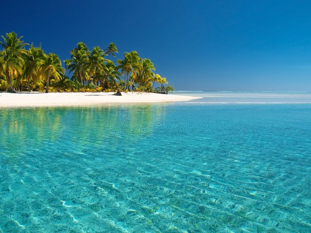
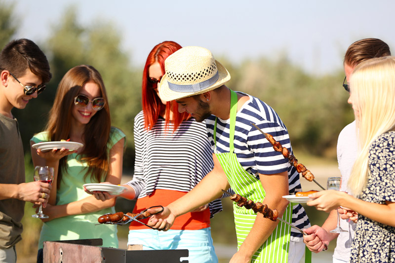

Відпочинок на морі
2021 рік тільки тішить спекотною погодою на початку літа! Тоді чому б не розглянути найпопулярніші місця де можна вдосталь натішитися екзотичними пляжами, рівномірною засмагою та популярним сервісом all incusive:
Болгарія
Турція
Єгипет
ОАЕ
Одеса
Турція
Єгипет
ОАЕ
Одеса

Віпочинок у горах
Для людей які не надто люблять спеку і великі води, пропоную розглянути варіанти з походом у гори, відвідування аутентичних ярмарок, тематичної кухні в гуцульських помешканнях, та крутих посиденьок біля костра
Карпати
Швейцарія
Норвегія
Швейцарія
Норвегія

Відпочинок на шашличках
І звичайно для консервативних людей які не переносять важких, довгих, душних поїздок можемо запропонувати прикольні та мальовничі місця для проведення пікніку. Це ж так романтично і весело зібратися з друзями біля монгалу, розказувати байки, смішні історії, та планувати спільні поїздки на море!
Соцьке озеро
Вишенське озеро
Черипашенці
Вишенське озеро
Черипашенці